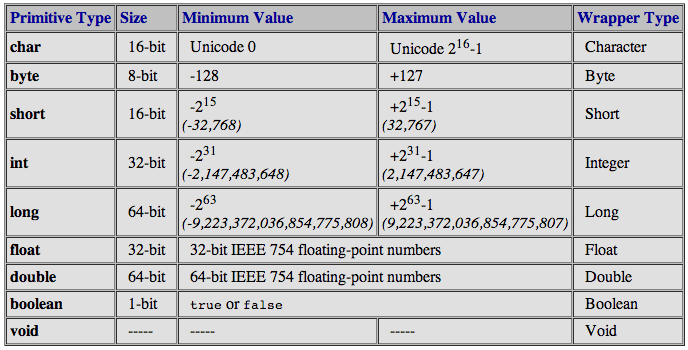

Functional programming
with Java & VAVR
#EYD
Juan Antonio Breña Moralv0.3.0-SNAPSHOT
Who I am
|
|
Juan Antonio Breña Moral (40) Chapter Lead, Deejay & Mindstorms/STEAM teacher. Twitter | Github | Linkedin |
| Purpose: "Riding dragons with innovation & fun" | |
|
Quote: "Pressure makes diamonds." - George S. Patton Jr. |
|
“Production is the best place on the Internet.”
Dunning–Kruger effect

Agenda
- Goals
- Java 8+ & VAVR
- Functional patterns
- Sharpening the axe
- Future talks
Goals
I wish the audience could:
- Use functional composition in the daily job
- Design with better Types
- Think in Failures, not in Exceptions
Goals
Is Java, a functional language?
- Non-functional
- Mostly functional
- Purely functional
Java 8+ & VAVR
In computer science, functional programming is a programming paradigm—a style of building the structure and elements of computer programs—that treats computation as the evaluation of mathematical functions and avoids changing-state and mutable data.
Java 8+ & VAVR
Java 8+
Java 8+ & VAVR
VAVR
- vavr.core: Tuple0-8, Function0-8, CheckedFunction0-8, Lazy
- vavr.control: Option, Try, Either, Validation
- vavr.collection: Seq, Map, Set
- vavr.concurrency: Future
Java 8+ & VAVR
Functional features combined:
- Equational reasoning
- Functional composition
- Functor, Monads & Effects
- List manipulation
- Lifting, Currying, Memoization
- Lazy execution
- Tuples
- Immutable data structures
Functional patterns
- Functional composition
- Type driven development
- Functional Error Handling
Functional composition

Functional composition
Function composition is a mechanism to combine simple functions to build more complicated ones.
The ability to easily compose functions encourages factoring (breaking apart) functions for maintainability and code reuse.
Type driven development
Type-driven development is a programming style where you write types first and use them to guide the definition of functions in your program.
A strong type system can not only prevent errors, but also guide you and provide feedback in your design process.
Using functional programming language changes the way you write code. You start thinking about the (data) types that represent the data your code works with.
Type driven development
There are 3 steps in Type-Driven Development.
- Type: Either write a type to begin the process, or inspect the type of a hole to decide how to continue the process.
- Define: Create the structure of a function definition either by creating an out- line of a definition or breaking it down into smaller components.
- Refine: Improve an existing definition either by filling in a hole or making its type more precise.
Type driven development
- Accuracy with Types used for Object design
- Cardinality
- Recovered Exceptions or better Types?
Type driven development
Accuracy with Types used for Object design
Values:
Type driven development
Accuracy with Types used for Object design
Effects:
- Optional is a monad that models the effect of optionality (of something being optional)
- CompletableFuture is a monad that models latency as an effect
- Try is a monad that models the effect of failures (manages exceptions as effects)
- Either is a monad that models the effect of failure and success
Type driven development
Accuracy with Types used for Object design
Type driven development
Cardinality
In mathematics, the cardinality of a set is a measure of the "number of elements of the set".

Type driven development
Recovered Exceptions or better Types?
"The hidden performance costs of instantiating Throwables", Norman Maurer

Functional error handling
Functional error handling
In Java 8, the language was released with some Types to increase the expressiveness, like Optional to model optionality in the value returned by a method.
Following the same idea, how to model the Exceptionality? Unfortunately, the language doesn't provide any solution in the line of Optional.
Functional error handling
Alternatives:
- Try
- Either
- Lifting
Functional error handling
The Try type represents a computation that may either result in an exception, or return a successfully computed value.

Functional error handling
The following exceptions are considered to be fatal/non-recoverable:
- InterruptedException
- LinkageError
- ThreadDeath
- VirtualMachineError (i.e. OutOfMemoryError or StackOverflowError)
Functional error handling
Either represents a value of two possible types. By convention, the Left signifies a failure case result and the Right signifies a success.

Sharpening the axe
Future talks
- Functional Resilience4J
- Microframeworks: Webflux
- GraalVM for Webflux
- Arrow-kt